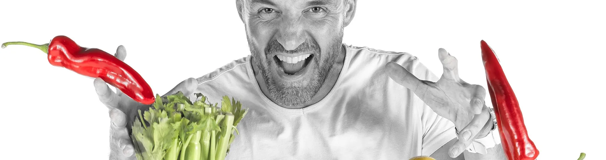
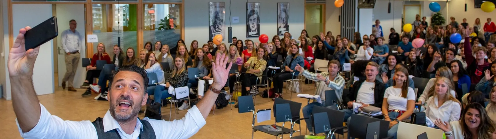

Teamworkshops die écht iets opleveren
Geen braaf uitje, maar een sessie waar je team over blijft praten. Met energie, humor en een serieuze boodschap. Anders kijken. Wèl oplossen.
Workshop Smoothen Your Life
De energizer die je event naar een hoger plan tilt. In 1,5 tot 2 uur van luisteren naar zelf doen.
Jean-Marc neemt je mee in zijn verhaal, vol humor en prikkelende inzichten over voeding, keuzes en de prijs van smaak. Daarna gaan de blenders aan. In groepjes maken deelnemers met de Smoothie Configurator® smoothies die passen bij hun eigen doel. Aan het eind proost iedereen op een gezonde samenwerking.
Dit krijg je
- Een actieve ervaring die aanzet tot outside-the-box denken
- Iedereen leert snel en makkelijk een smoothie maken
- Blenders per groep, 25 soorten dagverse groente en fruit, informatiekaarten
- Opbouw, afbouw, reistijd en voorbespreking inbegrepen
- Geschikt tot 100 deelnemers, ook in het Engels

Teamworkshop Smoothen Your Business
Samen werken aan gezond samenwerken. Je team blendt zijn eigen oplossing, letterlijk.
Loopt de samenwerking vast? Staat er een verandering voor de deur? In deze workshop maken groepjes een smoothie als antwoord op een vooraf bepaalde uitdaging. Elk ingrediënt staat voor een concrete actie. Dat levert hilarische presentaties op, met een heel serieuze uitkomst: afspraken waar iedereen achter staat.
Het bijzondere: jij hoeft het programma niet te bedenken. Jean-Marc voert vooraf 8 vertrouwelijke gesprekken met een dwarsdoorsnede van je team. Die gesprekken bepalen de thema's. Zo kun jij als leidinggevende gewoon meedoen.
- Vooraf: 8 interviewsWanneer is deze dag voor jou geslaagd? Waar loop je tegenaan? Wie verdient een pluim?
- Keynote De Prijs van SmaakHet verhaal van Jean-Marc als opwarmer: keuzes maken en verantwoordelijkheid nemen.
- ProevenEen ter plekke gemaakte smoothie. Smaak is niet altijd de beste raadgever.
- Blenden in groepjesElk ingrediënt is een actie. Samen stel je de ideale blend voor jullie uitdaging samen.
- Presenteren en proostenElke groep pitcht zijn blend. De acties gaan mee naar de werkvloer.
Duur 4 tot 5 uur · tot 80 deelnemers · inclusief voorbespreking, interviews, inkoop, materiaal en evaluatie
Alle formats naast elkaar
| Keynote | Smoothen Your Life | Smoothen Your Business | Blendbox / Mystery Box | |
|---|---|---|---|---|
| Ideaal voor | Congres, kick-off, inspiratiesessie | Personeelsdag, event, klantendag | Team in verandering of met een vraagstuk | Hybride en thuiswerkende teams |
| Duur | 45-60 minuten | 1,5-2 uur | 4-5 uur | Webinar naar keuze |
| Deelnemers | tot 250 | tot 100 | tot 80 | tot 500 |
| Zelf blenden | Proefronde | Ja, in groepjes | Ja, als teamoplossing | Thuis, met box |
| Resultaat | Inspiratie en inzicht | Energie en gezond gedrag | Concrete teamafspraken | Verbinding op afstand |
| Bekijk | Bekijk | Bekijk | Bekijk |
Twijfel je? Bel 06-50745730. In 10 minuten weten we samen welk format past.
Wat teams erover zeggen
13 maart hadden we een (h)eerlijke workshop van Jean-Marc. Samen met mijn 60 collega's kregen we via een mooie smoothie-metafoor meer inzicht in het combineren van individuele kwaliteiten.
Jean-Marc weet op een ludieke en persoonlijke wijze een groep van bijna 50 projectleiders te overtuigen om eens iets anders te doen dan gebruikelijk.
Very knowledgeable, concrete and focused. Working with him is an absolutely valuable addition to your event.
Maak van je teamdag iets om over na te praten
Vertel ons over je team en je uitdaging. Binnen 1 werkdag heb je een voorstel op maat.
Jean-Marc Bilderbeek
Oprichter Smoothieclub. Je spreekt mij direct, geen tussenpersoon.